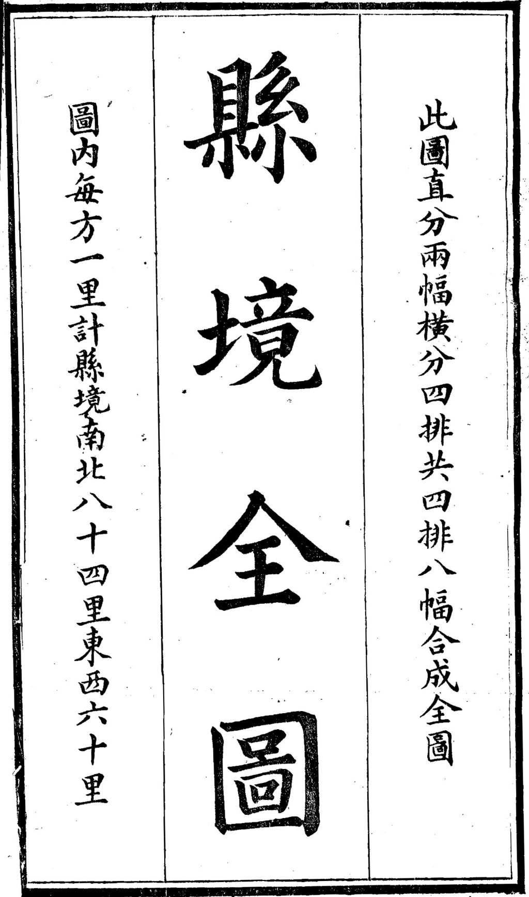
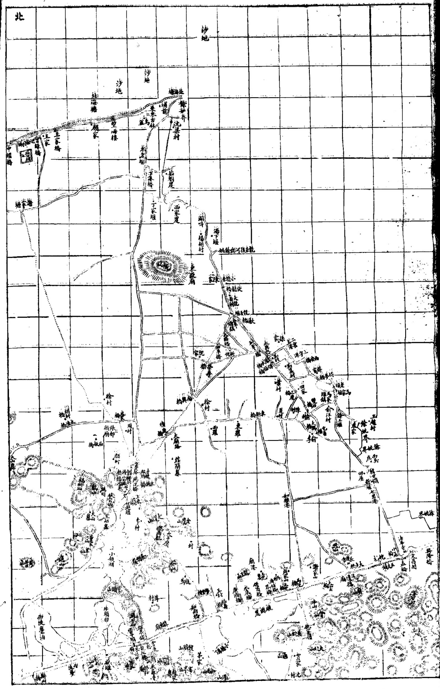
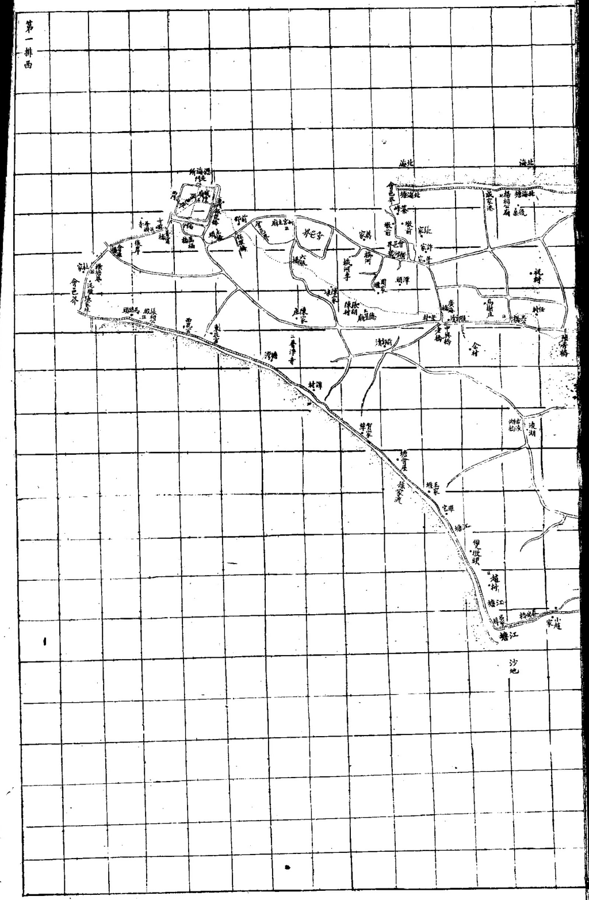
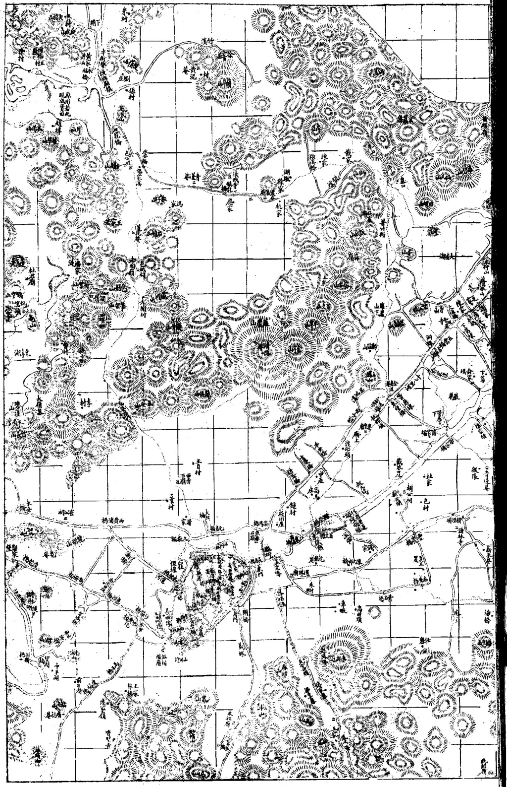
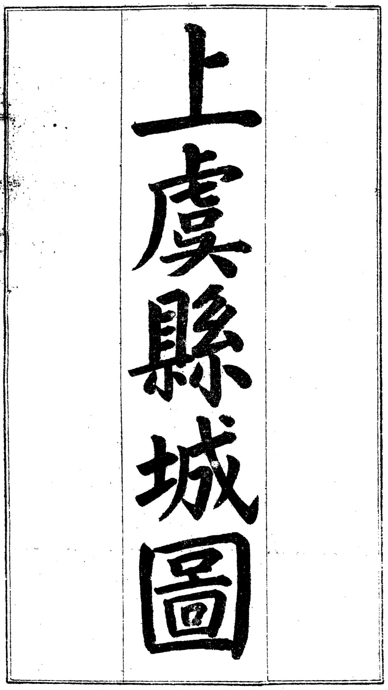
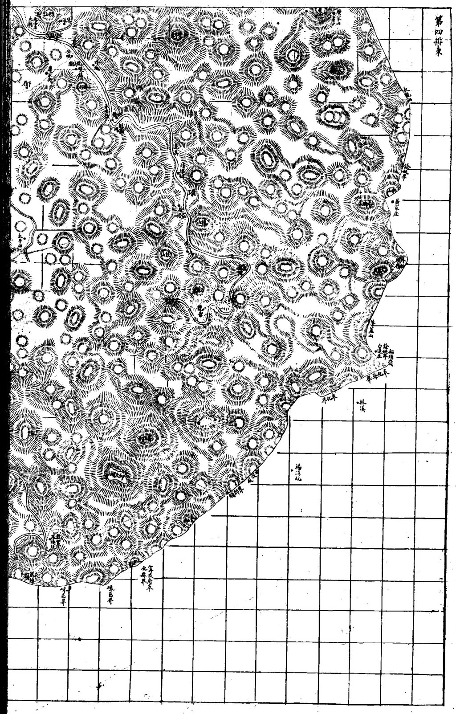
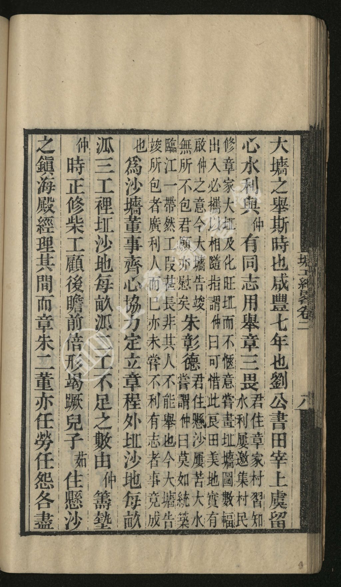
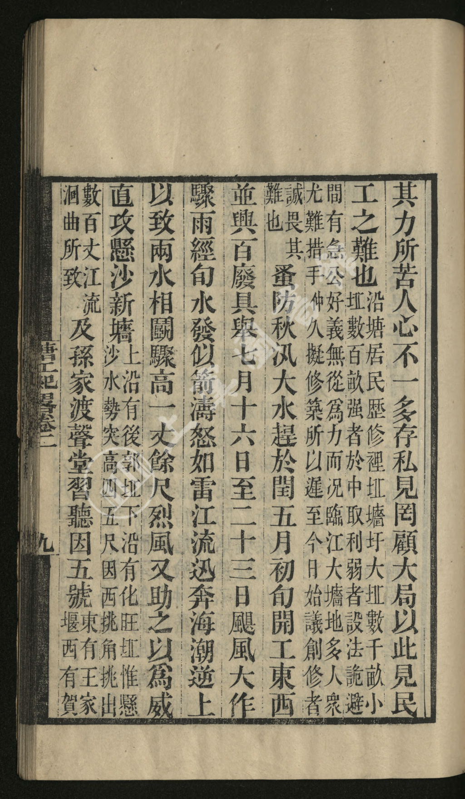
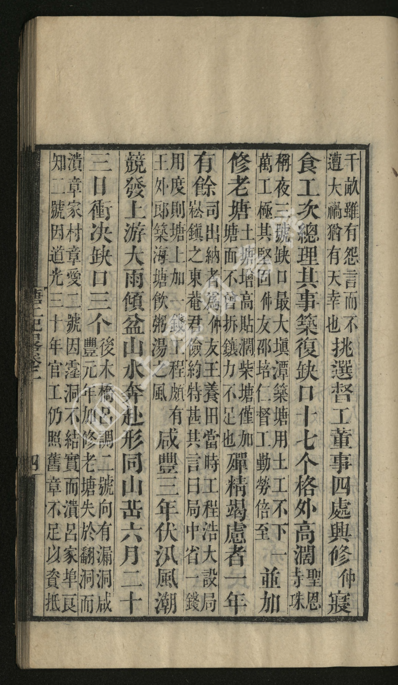
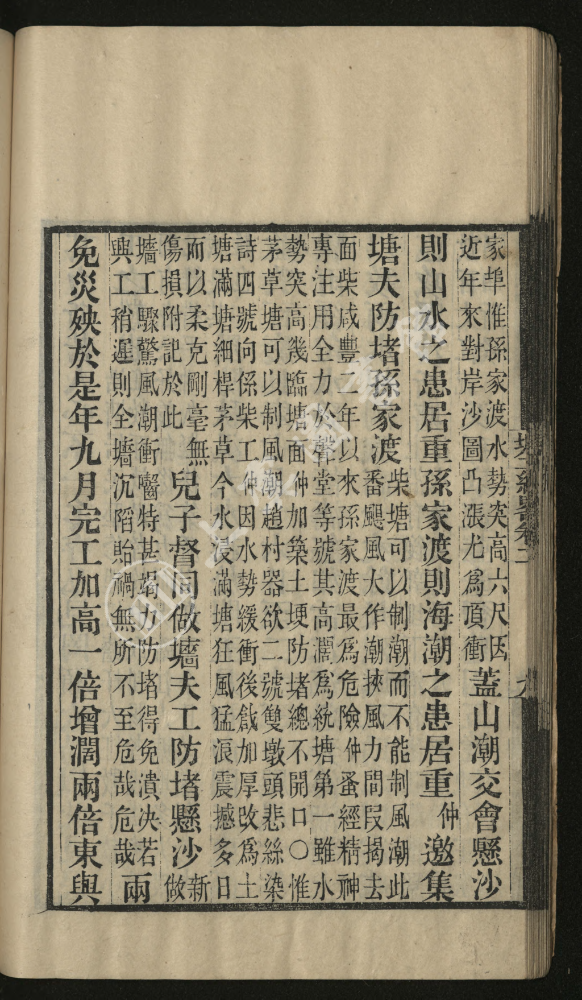

——光绪《上虞县志》「县境全图」＋《塘工纪略》＋今地实测（三源对读）
| 书 | 版本 / 性质 | 所载图 | 数字源 | 本次取用 |
|---|---|---|---|---|
| 光绪《上虞县志》 | 光绪十七年（1891）刻本，35 册 | 卷首「縣境全圖」八幅（4 排 × 東/西 各幅）＋「上虞縣城圖」＋學宮圖／縣署圖／經正書院圖 | 上虞图书馆古籍库（sylibguji.mh.chaoxing.com，IP 授权） | 整册 182 页已下载，取 6 幅 |
| 《民國重修上虞縣志》 | 民国印本，2 册 | 另有图说 | 同上 | 93 页已下载（备用） |
| 《塘工紀畧》 | 连仲愚撰（咸豐七年創修臨江大牆），合 卷一二·續·三續 一册；索书号 A1187 | 文中自述「嘗畫坵𡓜圖數幅」 | 同上 | 176 页已下载＋全册 OCR |
| 《上虞雁埠陆氏宗谱》 | 民国，6 册 | — | 同上 | 待取（雁埠在同里的第二部族谱） |
获取方式（实测可行，留给后人复验）
https://sylibguji.mh.chaoxing.com/ → 检索「上虞县志」→ 资源详情页 → 点「阅读」→ 影像接口
https://zt.chaoxing.com/reader/blobPdfImg?readerKey=<key>&unitId=8481&page=<N>
（readerKey 必须在浏览器里实地点开一次才生效；影像上限宽 1024 px。）
光绪《上虞县志》卷首 · 縣境全圖






连仲愚《塘工紀畧》（咸豐七年创修临江大牆主事人自记）




把 13 幅图逐页放大看过，北部各幅出现的地名是：
| 幅 | 页 | 可辨地名（摘） |
|---|---|---|
| 北部沙地幅 | p0126 | 沙地（两处）、北海塘、塍海樓／望海樓、顧家、王家橋、王家、德和號、中堰橋、塘家橋、沈梁村、前浦、丁家堰、西家堰、湯下堰、葛胡村、東嶽廟、崧廈（带放射状城符）、餘姚界、白馬湖、小査湖、西陡亹湖、牛頭山 |
| 第一排西 | p0128 | 曹娥江、北海塘、瀝海所（方城，有北門／南門）、會稽界、華鎮塘、孫家渡、賀家埠、毛家堰、塘灣、譚村、南湖、金雞橋、中興橋、橫河李、德星庵 |
| 第二排 | p0130／p0131 | 曹娥江、會稽界、密集聚落 |
| 第四排 | p0137 | 四明山區 |
→ 图上只有「沙地」这种地貌名，没有「頭甲／二甲／三甲／四甲／五甲」。
| 检索词 | 命中 | 命中书 |
|---|---|---|
| 五甲 | 0 | — |
| 二甲 | 0 | — |
| 懸沙 | 2 | 《塘工紀畧》 |
| 章三畏 | 1 | 《塘工紀畧》 |
| 雁埠 | 2 | 《上虞雁埠章氏宗谱》《上虞雁埠陆氏宗谱》 |
另一版（2023《虞你说地名》）记悬沙片「东南起百官街道中利村，西北至崧厦街道吕家埠，南临曹娥江，北依百沥海塘，总面积 15.64 平方公里」。
| 甲 | 今属 | 今地标／坐标（GCJ-02） | 沿革要点 |
|---|---|---|---|
| 头甲 | 百官街道 头甲社区 | 头甲公寓 30.0455, 120.8545 | 1961 年头甲大队（含大王家、小王家）；社区一带即原头甲自然村 |
| 二甲 | 百官街道 二甲社区 | 30.0431, 120.8455（代码 330604001040；东临四甲、南临头甲、西临职教中心、北临体育中心，占地 16 万 m²） | 1961 年二甲大队（含三甲） |
| 三甲 | 无今地名（已并入二甲） | 旧址约 30.046, 120.850 一带（约略） | ★ 1961 年三甲并入二甲大队；三甲渡 2006 年停渡、无桥承名 → 名亡（对照：五甲名存，见下） |
| 四甲 | 百官街道 四甲社区 | 四甲新家园 30.0494, 120.8513 | 1961 年四甲大队（含燕子窠） |
| 五甲·内 | 崧厦街道 内五甲村（2012 年起曹娥街道托管） | 村域在沙塘以内 | 「以沙塘为界，塘内＝内五甲，塘外＝外五甲」 |
| 五甲·外 | 崧厦街道 外五甲村 | 30.0507, 120.8271（代码 330604005233） | 明末清初章氏来此开荒所立；三面临江；1995 裁弯取直后免涝；2020 已列征迁 |
| 五甲渡 | 桥梁／公园承名 | 五甲渡大桥 30.0560, 120.8176（1995 五甲渡桥 → 2013 五甲渡大桥 → 2025.3 五甲渡城市公园） | 渡废名存，故今图上找得到五甲渡 |
排布方向：沿曹娥江，自东南（上游·百官）向西北（下游·吕家埠）依次编号：头甲 → 二甲 → 三甲 → 四甲 → 五甲。故 头甲最近百官，五甲最近吕家埠。这与「章氏住三甲 → 章家义渡在近三甲渡」「外五甲村以章姓为主」两事地理上完全自洽。
雁埠今地·地图.html 已把这 7 个点位（头甲／二甲／三甲／四甲／内五甲／外五甲／五甲渡）标到腾讯地图上，可按「头甲～五甲」分类筛选、逐点看沿革。| 时间 | 那一片在图上／文里是什么 |
|---|---|
| 1891 光绪志图 | 只写「沙地」——北面杭州湾，西面曹娥江，近旁只有瀝海所、崧廈两个大镇，江边一道塘（沙墙） |
| 1857《塘工紀畧》 | 「章三畏君住章家村」「朱彰德君住懸沙」「直攻懸沙新牆」——村已立，牆初成 |
| 1925 宗谱 | 族人「住懸沙二甲／三甲／五甲」（册 05、册 07 世录实测）——甲名入谱 |
| 1940 / 1961 / 1995 / 2006 / 2025 | 王公沙塘分内·外五甲 → 三大队并村（三甲亡）→ 裁弯取直 → 三甲渡停渡 → 五甲渡城市公园 |
一句话：1891 年地图上那片空白的「沙地」，正是今天头甲～五甲的七个社区／村；图的空白不是没内容，是当时还没有可上县图的地名。
出处：连仲愚撰，上虞图书馆古籍库藏本，索书号 A1187（合「塘工紀畧卷一至二／續塘工紀畧／三續塘工紀畧」为一册，影像共 176 页）。本书是咸豐七年（1857）创修临江大牆的主事人自记，正是《章氏宗谱》卷九、卷十那条治江事的上游原始文献。
本次已把全书 176 页下载并做古籍 OCR，可精确定位：「章家村」见影像 p75、p84；「章三畏」见 p84；「懸沙」见 p84、p85；「臨江大𡓜」见 p85、p121；「沙𡓜」见 p71、p81–84、p121。
其一（章三畏主事）——影像 p84
同页紧接一句，是沙墙的董事与派工章程：
其二（懸沙水势）——影像 p85
其三（孫家渡险工）——影像 p86
其四（最早一条「章家村」）——影像 p75
| 项 | 《塘工紀畧》 | 《章氏宗谱》 | 合 |
|---|---|---|---|
| 人名 | 章三畏 | 卷十〈章三畏公傳〉：諱東序，字三畏，泳公第三子 | ✅ |
| 年份 | 咸豐七年 | 卷九「咸豐七年知縣劉書田與連仲愚先生商水利，用三畏公議創修臨江大牆」 | ✅ |
| 工长 | 大牆告竣，包者廣 | 卷十「工長三千六百丈」 | ✅ |
| 主官 | 劉公書田宰上虞 | 卷九「知縣劉書田」 | ✅ |
目录：上虞雁埠章氏宗谱\04_接谱\老地图影像\
| 文件 | 内容 |
|---|---|
01_光绪上虞县志_上虞县城图_p0122.png | 上虞縣城圖（舊縣治豐惠） |
02_光绪上虞县志_县境全图_题记_p0124.png | 「縣境全圖」题记（每方一里／南北84里‧東西60里） |
03_光绪上虞县志_县境全图_北部幅_沙地与崧厦_p0126.png | 北部幅：沙地·北海塘·崧廈·白馬湖 |
04_光绪上虞县志_县境全图_第一排西_曹娥江与沙塘_p0128.png | 第一排西：曹娥江·瀝海所·會稽界·孫家渡·沙塘 |
05_光绪上虞县志_县境全图_第二排_曹娥江中段_p0130.png | 第二排：曹娥江中段密集聚落 |
06_光绪上虞县志_县境全图_第二排西_p0131.png | 第二排西（带幅名） |
07_光绪上虞县志_县境全图_第四排_四明山区_p0137.png | 第四排：四明山區 |
目录：上虞雁埠章氏宗谱\04_接谱\塘工纪略影像\
| 文件 | 内容 |
|---|---|
01_塘工纪略_p075_咸丰三年溃章家村章爱二号.png | 咸豐三年伏汛决口，「潰章家村章愛二號」 |
02_塘工纪略_p084_咸丰七年举章三畏住章家村.png | ★「章三畏君住章家村」「朱彰德君住懸沙」＋沙墙董事派工章程 |
03_塘工纪略_p085_直攻悬沙新墙_後郭坵化旺坵.png | ★「直攻懸沙新牆，上沿有後郭坵，下沿有化旺坵」 |
04_塘工纪略_p086_孙家渡最为危险.png | 「孫家渡」，咸豐二年以来最险 |
另存：《塘工紀畧》全书 176 页影像＋古籍 OCR 文本（工作副本存 WorkBuddy/tmp_map/，未入成果件；如需某页可再导）。
《塘工紀畧》（1857）已见「懸沙」 → 「懸沙」是早于保甲制的老地名；「×甲」作为村名最迟 1925 年已在谱中通行。故「甲」的来源仍以盐务灶甲／社甲为本，1934 保甲制只是再沿用。→ 已同步修订〈地名考〉§二、§五。*编制：据宗谱十三册（民国十四年乙丑·1925 星聚堂木活字本）＋光绪《上虞县志》＋《塘工紀畧》＋今地实测，四源对读。凡「约略」字样者均非实测，勿引用。*